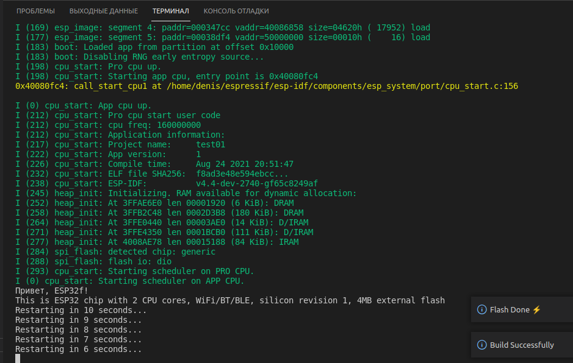

Чуть подробнее о настройке среды разработки esp-idf для разработки приложений Esp32
Программирование*Eclipse*Компиляторы*Программирование микроконтроллеров*
Туториал
Почему, ESP32?
Esp32 использует два процессора Xtensa с симметричной адресацией. Это разработка Гарварда, сделанная аж в 1997 году. Заявленная тактовая частота 240/160 МГц.
Частота таймеров 80 МГц
Очень низкое энергопотребление в режиме «глубокого сна» — аж 5-2,5 мкА.
Аналогичные по архитектуре модули STM32, скажем стоят значительно дороже. Да, 400 МГц, да отличная документация. Но, скажем процессор STM32F407 стоит около 1000 рублей на Алиэкспрессе.
И почти нет микропроцессоров, у которых были бы «на борту» Bluetooth и Wi-Fi стоимостью 150-200 рублей.
Удобные для любительской распайки модули с микропроцессором «на борту»
Почему esp-idf VSCode и Eclipse?
https://github.com/espressif/esp-idf
ESP-IDF позиционируется, как Espressif IoT Development Framework — Фреймворк разработки IoT (Интернет Вещей). Плата с процессором Esp32 вполне может стать объектом Интернета Вещей.
А так же, с этим фреймворком легко разрабатывать Bluetooth Low Energy устройства, которыми, скажем, можно легко управлять с мобильного телефона. Подключаться к WiFi и проводной сети Ethernet.
Да, цена входа для непрофессионального разработчика на Arduino IDE, значительно ниже. Для сегмента DIY (Самодельничество, или «сделай сам» (англ. DIY — Do It Yourself), — вид деятельности, при котором люди самостоятельно производят какие-либо изделия для собственного использования), более чем достаточно.
Но всегда же хочется большего, не правда ли? Примитивы FreeRTOS кажутся мне более понятными, логичными и простыми в использовании, чем void setup() и void loop(). Опять же, возможность обращения к LL функциям (Low Level Layer Function)
Так и не понял, можно ли «поднять» BLE GATT Server на Arduino IDE, но во фреймворке esp-idf он пишется почти элементарно.
Часть I. Консоль
Статей о настройке IDE Visual Studio Code и Eclipse под Linux и Windows написано уже много. В принципе, с точностью до небольших деталей, они повторяют друг-друга. Эта заметка не исключение.
Отличие лишь в том, что и Eclipse и Visual Studio Code будут использовать единожды установленные Espressif Framework и набор инструментов — toolchain. Раздражает, что каждая установка плагинов https://github.com/espressif/vscode-esp-idf-extension и https://github.com/espressif/idf-eclipse-plugin «тащит» за собой новую установку пакета ESP-IDF и TOOLCHAIN. Каждая установка в сумме, 3.3 Гб, между прочим.
Linux
Для примера, использую Ubuntu 21.04.
Во-первых, классическое начало для deb систем:
sudo apt update
sudo apt upgrade
sudo apt install python3-pip git cmake ninja-build
Ну или установить cmake и ninja, используя snap
Для полноценной работы esp-idf должны быть установлены git, python3 и pip3. Причём, надо, чтобы python вызывался, как python, а не python3 или python3.9 и т.д. Скажем, в Ubuntu 18.04, 20.10, 21.04 такой команды, как python изначально нет. Есть python3. Так, что надо либо сделать мягкую ссылку:
mkdir ~/.local/bin
ln -sf /usr/bin/python3 ~/.local/bin/python
source ~/.profile
Либо создать Python Virtual Environment (https://docs.python.org/3/tutorial/venv.html)
python3 -m venv ~/python/python3
code ~/python/python3/bin/activate
Последний способ чуть сложнее, но даже в создании мягкой ссылки есть забавный подвох: если Вы не создали каталог ~/.local/bin, то .profile его не «подхватит», потому, что в скрипте профиле есть такой код:
if [ -d "$HOME/.local/bin" ] ; then
PATH="$PATH:$HOME/.local/bin"
fi
Иными словами, если этот каталог не создан, его в пути и не будет. После создания каталога, нужно вызвать source ~/.profile
Проверим себя. Вызовем из терминала:
$python
Python 3.8.10 (default, Jun 2 2021, 10:49:15)
[GCC 9.4.0] on linux
Type "help", "copyright", "credits" or "license" for more information.
>>> quit()
Всё работает. Скачиваем esp-idf. Предпочитаю установить фреймворк в какой-нибудь подкаталог домашеного каталога, вроде ~/espressif. Фреймворков Esp32, аж целых три — esp-adf, esp-idf, esp-mdf, так что, чтобы не засорять «корневое» пространство пользовательского каталога, сложим их в одну кучу. Имена каталогов верхних уровней не должны содержать пробелов.
mkdir ~/espressif
cd ~/espressif
git clone https://github.com/espressif/esp-idf.git --recursive
Имеет смысл сразу добавить в какой-нибудь из пользовательских .*rc-файлов загрузку переменных окружения esp-idf. Переменные ADF_PATH и MDF_PATH предусмотрены на тот случай, если Вы захотите работать на Esp32 со звуком или создавать самоорганизующиеся сети из нескольких плат Esp32.
Скрипт добавляет алиас idfexp. Так удобнее превращать текущую консоль в среду IDF-разработки, чтобы не набирать, скажем каждый раз ~/espressif/esp-idf/export.sh
# Скрипт для экспорта окружения esp-idf, esp-adf, esp-mdf
#
ESP_PATH="$HOME/espressif"
IDF_TOOLS_PATH="$HOME/.espressif"
if [ -d "$ESP_PATH/esp-idf" ] ; then
IDF_PATH="$ESP_PATH/esp-idf"
export IDF_PATH
if [ -f "$IDF_PATH/export.sh" ] ; then
alias idfexp="\. $IDF_PATH/export.sh"
fi
fi
if [ -f "$ESP_PATH/esp-adf" ] ; then
ADF_PATH="$ESP_PATH/esp-adf"
export ADF_PATH
fi
if [ -f "$ESP_PATH/esp-mdf" ] ; then
MDF_PATH="$ESP_PATH/esp-mdf"
export MDF_PATH
fi
if [ -d "$IDF_TOOLS_PATH" ] ; then
export IDF_TOOLS_PATH
fi
Можно добавить автоматическую загрузку скрипта через любой актуальный ~/.*rc-файл. Например, добавить в ~/.bashrc (\. необходим, поскольку, разрешения .*rc-файлов 0644):
if [ -f "$HOME/.idfrc" ]; then
\. "$HOME/.idfrc" # This load Espressif environment
fi
Далее, осталось установить набор инструментария для сборки проектов. По умолчанию toolchain будет установлен в ~/.espressif
cd ~/espressif/esp-idf
./install.sh
Если всё прошло удачно, то увидим что-то такое (журнал установки укорочен):
Скрытый текст
Обратите внимание, что предлагается обновить venv:
WARNING: You are using pip version 21.2.3; however, version 21.2.4 is available.
You should consider upgrading via the '/home/grandfatherpikhto/.espressif/python_env/idf4.4_py3.8_env/bin/python -m pip install --upgrade pip' command.
Обновляем:
~/.espressif/python_env/idf4.4_py3.8_env/bin/python -m pip install --upgrade pip pip
Размер esp-idf приблизительно 2.2 Гб, toolchain — 1.2 Гб. Ну, так на минуточку:
$du -hs ~/espressif/esp-idf
1.1G esp-idf
$du -hs ~/.espressif
1.9G .espressif
После установки toolchain можно вызвать source ~/.idfrc и подгрузить переменные окружения ESP-IDF командой idfexp или
. ~/espressif/esp-idf/export.sh
Если всё пошло правильно, должны увидеть что-то такое:
Скрытый текст
В принципе, можно приступить к сборке и прошивке какого-нибудь проекта из каталога ~/espressif/esp-idf/examples, но сначала надо настроить udev — пакет управления устройствами для новых версий ядра Linux.
Ниже привожу «сборную солянку» файла 40-dfuse.rules из правил, которую удалось накопать на форуме Esp32 (https://www.esp32.com/). Думаю, в особых объяснениях этот файл не нуждается. Просто, коллекция idVendor и idProduct различных макетных плат Esp32. Обратите внимание, что расширение файла должно быть именно «rules». Иначе, udev не прочитает правила.
SUBSYSTEMS=="usb", ATTRS{idVendor}=="303a", ATTRS{idProduct}=="00??", GROUP="plugdev", MODE="0666"
SUBSYSTEMS=="usb", ATTRS{idVendor}=="0403", ATTRS{idProduct}=="6015", MODE="0666", ENV{ID_MM_DEVICE_IGNORE}="1"
SUBSYSTEMS=="usb", ATTRS{idVendor}=="0403", ATTRS{idProduct}=="6010", MODE="0666", ENV{ID_MM_DEVICE_IGNORE}="1"
SUBSYSTEMS=="usb", ATTRS{idVendor}=="10c4", ATTRS{idProduct}=="ea60", MODE="0666", ENV{ID_MM_DEVICE_IGNORE}="1"
SUBSYSTEMS=="usb", ATTRS{idVendor}=="067b", ATTRS{idProduct}=="2303", MODE="0666", ENV{ID_MM_DEVICE_IGNORE}="1"
Обновляем правила:
sudo su
cp 40-dfuse.rules /etc/udev/rules.d/
systemctl restart udev.service
udevadm control --reload-rules
Теперь, можно собрать и запустить какой-нибудь простой проект Esp32. Не забудьте подключить макетную плату Esp32 к компьютеру. Если она уже была подключена, отключите и подключите снова. Иначе, правила udev не будут прочитаны для этого устройства.
У вашего покорного слуги наличествует макетная плата ESP32-WROOM. Попробуем собрать и прошить ~/espressif/esp-idf/examples/get-started/hello_world. Обратите внимание, что, в принципе надо указывать порт. Например, idf.py -p /dev/ttyUSB0 flash. Но, на самом деле, это не обязательно. idf.py попробует найти порт, к которому подключено устройство Esp32 и прошьёт первое обнаруженное.
Если всё получилось хорошо, увидим что-то вроде:
Скрытый текст
Теперь, можем прошить полученное приложение на борт процессора esp. Порт, конечно, можно не указывать, но тогда idf.py начнёт перебирать все доступные порты. Лучше, idf.py -p /dev/ttyUSB0 flash
idf.py flash
Скрытый текст
Осталось запустить мониторинг работы программы:
idf.py -p /dev/ttyUSB0 monitor
Скрытый текст
Т.е., программа «Здравствуй Мир!» считывает параметры MCU, печатает их и начинает обратный отсчёт с периодом в одну секунду. Когда доходит до нуля, перезагружает процессор.
У утилиты idf.py есть ещё несколько полезных параметров. Вы их можете посмотреть, запустив
idf.py --help
Можете на них взглянуть, хотя, скорее всего, Вы уже установили программу
Скрытый текст
Windows
Обратите внимание, что %USERPROFILE% (Путь к домашнему каталогу пользователя) не должен содержать пробелов. Иначе, установка инструментария esp-idf просто не запустится. Если путь содержит пробелы, устанавливайте куда-нибудь ещё. Например, на другой диск или в корневой каталог диска C:\
Обычно, git.exe (https://git-scm.com/downloads) устанавливается в каталог %ProgramFiles%/git/bin. python.exe (на момент написания актуальна версия Python3.9 — https://www.python.org/downloads/, Обычно, находится в каталоге %ProgramFiles%/Python39 )
Не стоит устанавливать пакеты ninja и cmake. Пакет установки Windows «вытянет» сам нужные версии и установит их локально.
Необходимо сразу проверить, чтобы git и python были уже прописаны в Path. Можно глобально, можно локально:Находим в настройках Windows изменение системных/пользовательских переменных среды
Также, под Windows, можно сразу прописать переменную IDF_PATH. Обычно, устанавливаю esp-idf в %USERPROFILE%\espressif. Можно сразу добавить IDF_TOOLS_PATH. По умолчанию, esp-idf toolchain (инструментарий) установится в каталог %USERPROFILE%/.espressif. Для ускорения настройки vscode-esp-idf-extension можно ещё добавить переменную IDF_PATH_ENV_PATH — путь к каталогу, куда устанавливается python venv для работы esp-idf. На данный момент IDF_PYTHON_ENV_PATH=%USERPROFILE%\.espressif\python_env\idf4.4_py3.9_env. Проблема в том, что с каждой новой версией Python и ESP-IDF этот путь будет меняться.Настраиваем переменные окружения для ESP-IDF, чтобы плагин VSCode мог бы «подхватить» уже настроенный пакет
Для установки под Windows можно использовать export.bat из Командной Строки (cmd.exe)
mkdir %USERPROFILE%\espressif
cd %USERPROFILE%\espressif
git clone https://github.com/espressif/esp-idf --recursive
.\install.bat
Равно, можно использовать установщик для PowerShell:
cd $env:USERPROFILE
mkdir espressif
git clone https://github.com/espressif/esp-idf.git --recursive
cd .\esp-idf\
.\install.ps1
Если получилось, увидим примерно следующее (вывод сокращён):
Скрытый текст
Теперь, нужно запустить export.bat:
Скрытый текст
Или, если Вы используете PowerShell:
$env:USERPROFILE\espressif\esp-idf\install.ps1
По умолчанию toolchain установится в %USERPROFILE%\.espressif ($env:USERPROFILE\.espressif)
Не пропускаем предупреждение об обновлении Python Virtual Environment. Обновляем:
$env:USERPROFILE\.espressif\python_env\idf4.4_py3.9_env\Scripts\python.exe -m pip install --upgrade pip
Осталось сделать ярлыки для запуска среды консольной разработки. Открываем в проводнике. Правой кнопкой в проводникеSystemRoot%\system32\WindowsPowerShell\v1.0\powershell.exe (расположение по умолчанию). Правой кнопкой мыши вызываем «Создать ярлык». В свойствах ярлыка добавляем: "%SystemRoot%\system32\WindowsPowerShell\v1.0\powershell.exe" -noexit -ExecutionPolicy Bypass -File %USERPROFILE%\espressif\esp-idf\export.ps1. При желании можно поставить какую-нибудь красивую иконку.
Неплохо указать рабочий каталог. Например, "%USERPOFILE%\esp32"
Или тоже самое можно сделать для cmd.exe — правой кнопкой мыши на экране, «Создать ярлык», указать команду: %comspec% /k "%IDF_PATH%\export.bat". И, опять-таки, не забудьте установить путь к рабочему каталогу (Например, %USERPROFILE%\esp32) и можете поменять иконку.
Итак, после запуска консоли, мы получили приглашение к сборке проекта: idf.py build. т.е., если мы находимся в каталоге проекта, то можно его собрать и прошить Можно скопировать из примеров проект «hello world», скажем в каталог %USERPROFILE%\esp32\hello_world:
cd %USERPROFILE%
mkdir esp32
mkdir hello_world
copy %USERPROFILE%\espressif\esp-idf\examples\get-started\hello_world %USERPROFILE%\esp32
cd .\esp32\hello_world
idf.py build
idf.py flash
idf.py monitor
Команда idf.py build строит проект, idf.py flash — прошивает устройство (плата уже должна быть подключена к компьютеру), idf.py — запускает монитор сообщений платы.
Если всё прошло успешно, увидим что-то вроде:
Скрытый текст
Т.е. выводится информация о процессоре, дальше запускается обратный отсчёт от 10 до 0 и процессор перезапускается.
Сам код программы Вы можете посмотреть в %USERPROFILE%\esp32\hello_world\main\hello_world_main.c
Система мониторинга Esp32 настолько мощная, что в использовании отладчика, как правило нет необходимости. Впрочем, что выгодно отличает Esp32 от собратьев STM32 или ATmega, это дешевизна отладчика. Бюджетная плата FT2232HL обойдётся в районе одной тысячи рублей.
В принципе, если не претендовать на полнофункциональную Интегрированную Среду Разработки, фреймворк готов к работе. Редактировать исходный код примера ~/espressif/esp-idf/examples/get-started/hello_world/main/hello_world_main.c можно хоть при помощи того же notepad++.
В этом нет необходимости. esp-idf прекрасно «сотрудничает» с Visual Studio Code и Eclipse.
Часть II. Установка Visual Studio Code
Если Вы не установили VSCode глобально при помощи какого-нибудь пакетного менеджера, стоит скачать дистрибутив c https://code.visualstudio.com/download.
Под Windows, качаем User/System Installer. Я предпочитаю User Installer, чтобы VSCode установилась в %USERPROFILE%. Увы, здесь трюк с «подхватыванием» переменных окружения из Командной Строки не пройдёт. Поэтому, надо, чтобы были установлены переменные окружения IDF_PATH=%USERPROFILE%\espressif\esp-idf и IDF_PYTHON_ENV_PATH=%USERPROFILE%\.espressif\python_env\idf4.4_py3.9_env
Эту переменную можно скопировать при помощи Ctrl+M, вызвав set в командной строке, после запуска скрипта %USERPROFILE%\espressif\esp-idf\export.bat
Будьте внимательны: обратные слэши в пути!
Для Linux скачиваем, например .tar.gz архив. Или устанавливаем из стандартного пакетного менеджера. Сейчас трудно найти сборку Linux, в которой не было бы в стандартной поставке Visual Studio Code.
Если скачан .tar.gz архив под Linux можем распаковать полученный архив code-stable-x64-xxxxxxxxx-.tar.gz архив куда-нибудь вроде каталога ~/IDE
mkdir ~/IDE
cd ~/IDE
cp ~/Загрузки/code-stable-x64-xxxxx.tar.gz ~/IDE/
tar -zxvf code-stable-x64.tar.gz
В случае локальной установки, нужно сделать «мягкую» ссылку на ~/IDE/VSCode-linux-x64/bin/code в ~/.local/bin. Причём, ссылка должна быть именно «мягкой», иначе, code при вызове из командной строки будет искать сопутствующие библиотеки в каталоге вызова ~/.local/bin. Теперь, code можно вызвать из терминала из любого каталога.
ln -sf ~/IDE/VSCode-linux-x64/bin/code ~/.local/bin/
Если у вас установлена среда рабочего стола GNOME desktop и вы установились в локальный каталог пользователя, неплохо создать *.desktop файл в каталоге ~/.local/share/applications/vscode.desktop (видит только пользователь) или /usr/share/applications/vscode.desktop. Не забудьте заменить ${HOME} на путь к домашнему каталогу. destop переменных окружения не понимает! Если установка была сделана из пакетного менеджера программ, этого делать не нужно.
[Desktop Entry]
Type=Application
Exec="${HOME}/IDE/VSCode-linux-x64/bin/code" %F
Name=VSCode
GenericName=The Microsoft IDE for C/C++, Javascript, Python e.t.c. development.
Icon=${HOME}/IDE/VSCode-linux-x64/resources/app/resources/linux/code.png
StartupWMClass=code
Terminal=false
Categories=Development;IDE;C/C++;Python;Java;Java Script;Node;NodeJS
MimeType=text/x-c++src;text/x-c++hdr;text/x-xsrc;application/x-designer;
Итак, если всё сделано правильно, то можно из любого каталога из терминала, где был запущен idfexp, запустить code. Важно, что code запускается из терминала, где экспортированы переменные окружения esp-idf.
. ~/espressif/esp-idf/export.sh
code
или если настроен алиас:
idfexp && code
Далее, установка и настройка VSCode под Linux и Windows не будут отличаться.
Если в среде Linux или Windows настроен русский язык, VSCode запросит установку русскоязычного пакета. Можно установить. Ищем в списке расширений esp-idf и устанавливаем его.Установка плагина Espressif IDF
Далее, нажимаем F1 и ищем команду «>ESP-IDF Настроить расширения ESP-IDF». Если всё было сделано правильно, увидим меню, которое будет предлагать «штатные» пути для установки (плагин будет устанавливать снова окружение eps-idf и инструментарий) и предложит использовать текущую установку esp-idf.Выбираем «USE EXISTING SETUP»
Если всё прошло удачно, увидим сообщение, что окружение Espressif IDF настроено:Расширение Espressif IDF настроено
Можем создавать новый проект. Это можно сделать через меню команд «F1»/«Ctrl+Shift+P»/«>ESP-IDF: Новый проект» или использовать «Ctrl+E N». Все команды плагина esp-idf начинаются на «Ctrl+E» (См. https://github.com/espressif/vscode-esp-idf-extension#Available-commands — список команд)Создание нового проекта
Будьте внимательны, если Вы укажете неправильный путь к каталогу, проектов, приложение просто выдаст сообщение об ошибке, вместо того, чтобы попытаться создать такой каталог.
Осталось выбрать исходный шаблон. Сойдёт и простейший «template-app». Это уже знакомый нам «Hello World», считывающий параметры чипа, выводящий на экран некоторые из них и запускающий обратный отсчёт на десять секунд с последующей перезагрузкой Esp32.Выбираем шаблон проекта
Осталось нажать «Ctrl+E D» (собрать проект, прошить плату и запустить монитор). Видим знакомый журнал работы программы «Hello World!» с обратным отсчётом.Монитор работы Esp32
Выход из монитора, опять таки по сочетанию клавиш «Ctrl+]»
Можно, также создавать проекты, используя в качестве шаблонов, примеры, находящиеся в каталоге ~/espressif/esp-idf/examples. Для этого надо вызвать F1, и найти команду «>ESP-IDF: Показать примеры проектов». Правда, к сожалению, тут доступны далеко не все примеры.Создание проекта из примера
Всё. Visual Studio Code — рабочая полноценная IDE для разработки Esp32 приложений. Вы можете использовать, к примеру, F2 для рефакторинга, F12 для перехода к исходному коду включаемых файлов, функций и т.д.
Eclipse
Установка Eclipse под Windows и Linux, вообще, не отличается. Качаем с https://www.eclipse.org/downloads/ установщик Eclipse. Под Windows и Linux должен быть установлен JDK: https://www.oracle.com/ru/java/technologies/javase-jdk16-downloads.html
Запускаем установщик и, если видим в правом верхнем углу восклицательный знак, обновляем установщик.
«Выбираем Eclipse IDE for C/C++ Developers». После установки открываем «Help/Market Place» и ищем «esp-idf». Устанавливаем. После перезагрузки Eclipse вызываем «Help/Download and configure ESP-IDF». Указываем, что используем существующий пакет esp-idf:Указать путь к esp-idf
Единственная проблема в том, что Eclipse иногда почему-то не подхватывает пути к git или python. Но их несложно прописать вручную:Указать пути к необходимым файлам (обычно приходится делать это вручную)
Если текущая среда разработки была интегрирована успешно, можем перейти к «File/New Project/Espressif IDF Project» (ещё можно создавать встраиваемые компоненты IDF)
Если после перехода к экрану нового проекта нажать «Next>» и выбрать «Create a project from using one of the templates», можно создать проект из одного из примеров, находящихся в esp-idf/expamles.
Чтобы собрать проект, необходимо в ESP-IDF тулбаре установить нужную архитектуру процессора (обычно, это esp32, а не esp32s2) и нажатием на шестерёнку настроек в выпадающем списке «on» указать порт прошивки.Выбираем процессор
Указываем порт прошивки нажатием на шестерёнку около выбранного процессора. Теперь, можно нажать «Run». Если всё прошло удачно, видим процесс прошивки. ESP-IDF Terminal запускается нажатием на иконку монитора на ESP-тулбареВключение Espressif IDF монитора
Нажатие «Ctrl+]» здесь не работает. Чтобы прекратить мониторинг приложения, нужно просто закрыть монитор.Мониторинг приложения Espressif на Eclipse
Выводы
Espressif IDF — полноценный фреймворк разработки, подключаемый к IDE Visual Studio Code и Eclipse. И, увы, если бы не очень подробная документация и некоторое количество багов, возникающих с выпуском каждой новой версии, она бы вполне могла и должна была претендовать на звание «профессиональной».
Теги:
Хабы: